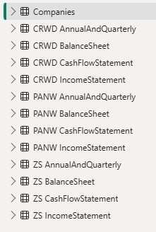

Fundamental Analysis Project: Visualization & Insights (Power BI)
Translating complex financial data from SQL into dynamic, comparative visualizations.
Following the data structuring phase, the clean, calculated metrics from the SQL database were imported into Power BI. This step focused on creating highly effective and comparative visualizations...

These four ratio comparisons formed the core of the weighted financial scoring model...
1. Operating Margin
Metric:
DIVIDE(SUM('companies IncomeStatement'[OperatingIncome]),SUM('companies IncomeStatement'[Revenue]))*100
Insight: This metric gauges core operational efficiency. PANW typically leads, showing the highest or nearest-to-zero margin. CRWD and ZS often show negative margins due to aggressive, high investment in R&D and Sales to drive growth.
Ranking: PANW > CRWD > ZS (Higher is better).
2. Gross Margin
Metric:
DIVIDE(SUM('companies IncomeStatement'[GrossProfit]),SUM('companies IncomeStatement'[Revenue]))*100
Insight: Reflects the business model. Pure SaaS companies (ZS, CRWD) consistently show the highest margins (typically above 75-80%) due to low Cost of Goods Sold. PANW lags slightly due to its traditional hardware integration.
Ranking: ZS > CRWD > PANW (Higher is better).
3. Free Cash Flow Margin (FCF Margin)
Metric:
DIVIDE( SUMX('companies CashFlowStatement','companies CashFlowStatement'[CashFromOperatingActivities]+ 'companies CashFlowStatement'[CashFromInvestingActivities] ),
SUM('CRWD IncomeStatement'[Revenue]))*100
Insight: A superior measure of financial health. CRWD often demonstrates the best cash efficiency, converting revenues to free cash at a high rate. PANW follows closely. ZS may show a lower or negative ratio, suggesting higher relative cash consumption.
Ranking: CRWD > PANW >> ZS (Higher is better).
4. Debt-to-Equity Ratio
Metric:
DIVIDE(SUM('companies BalanceSheet'[TotalLiabilities]),SUM('companies BalanceSheet'[TotalStockholdersEquity]))
Insight: This is a risk metric (lower is better). Tech growth companies often carry minimal debt. The calculation uses the latest Balance Sheet snapshot, not an average. CRWD/ZS are generally expected to have lower ratios than PANW, which sometimes uses debt for large M&A or growth projects.
Ranking: CRWD < ZS < PANW (Lower is better).
The Power BI dashboard revealed several critical insights regarding company performance...